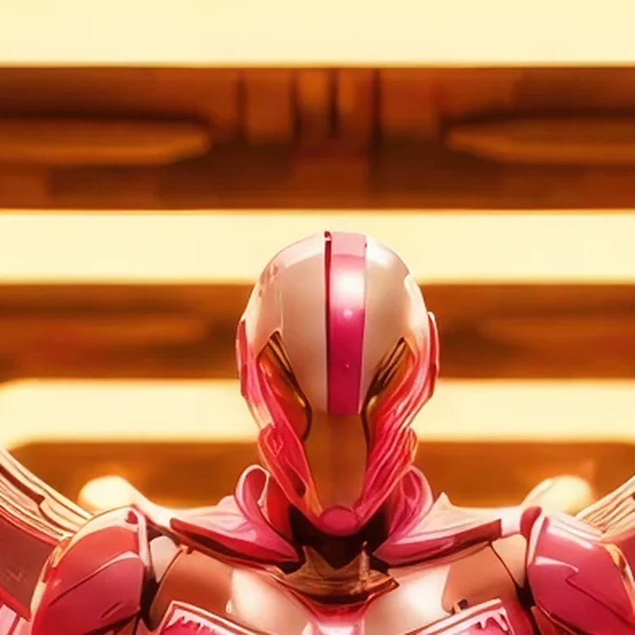

Field Observation
Orvak discovers an alien blue node glowing against the corridor's right side. The node shows alien technology inserted into Earth 1's built environment.
 ©
©
GENEZYS ARCHIVE · Legionnaire
Horizon Caller
Identity & combat record
Archive node 01 / 04

Archive record
Orvak lives at the eastern rim of a desert and waits each night for the first light. The Daybreak Wave carries that moment as a weapon: one strike that pierces, and another that follows. For a Horizon Caller, every dawn is a reminder of the Vanguard's creed: light goes first.
Combat signature
Sweeps enemies with first light: Deals 100 pierce damage. Deals 100 damage to a different enemy.
Genezys 01:06 ™&©2026LEGIONS
Field intelligence
Archive node 02 / 04
FIELD REPORT // NODE DETECTION

Mission successfulAdditional intelligence available
Field Observation
Orvak discovers an alien blue node glowing against the corridor's right side. The node shows alien technology inserted into Earth 1's built environment.
Environment
Object Analysis
Key Findings
Restricted visual records
Archive node 03 / 04


Motion archive
Archive node 04 / 04
Motion record not yet recovered